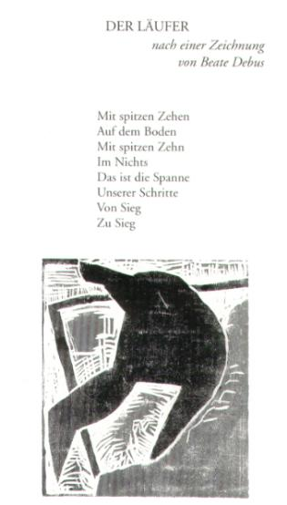

Gedichte 1996–1999, mit Holzschnitten von Beate Debus, quartus-Verlag Bucha bei Jena 1999
DER LÄUFER
nach einer Zeichnung von Beate Debus
Mit spitzen Zehen
Auf dem Boden
Mit spitzen Zehn
Im Nichts
Das ist die Spanne
Unserer Schritte
Von Sieg
Zu Sieg
MAGISCHE MOMENTE (III)
Die Flocken Schnee
So groß
Wie viele braucht man
Um die Hand zu füllen
Fang sie auf
Zähl mit. So leicht
Sind sie wie manches Jahr
Im Wind, im matten Licht
Der Nacht. Großvater
Hatte größre Hände
Er fing viele auf. Und ich –
Mit jeder Flocke
Legt sich seine Hand
Ein wenig mehr auf meine
Kühl, als käm sie
Von weither. Sacht
Als wär sie niemals
Fortgewesen